先讀一座老屋
留意木造建築、展覽與庭園細節，從空間認識地方的歷史記憶。
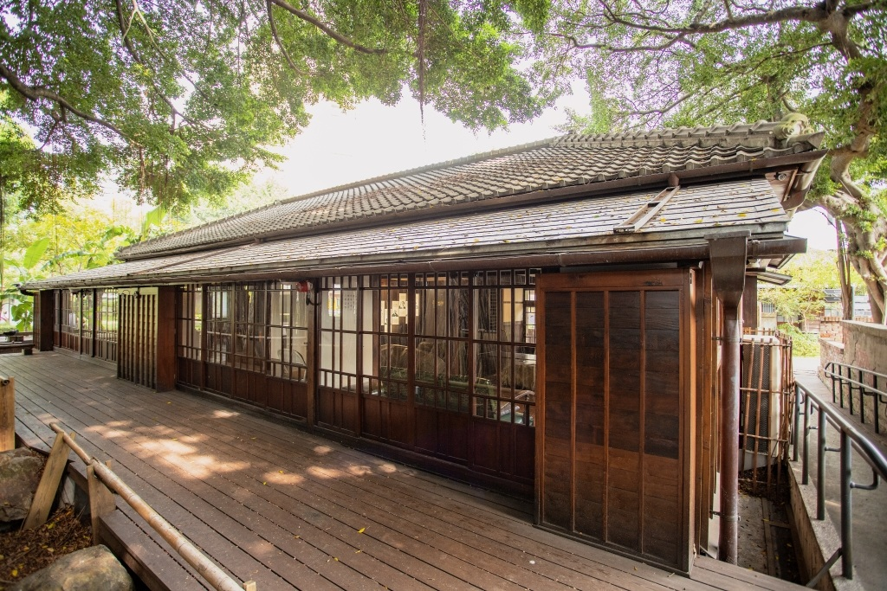
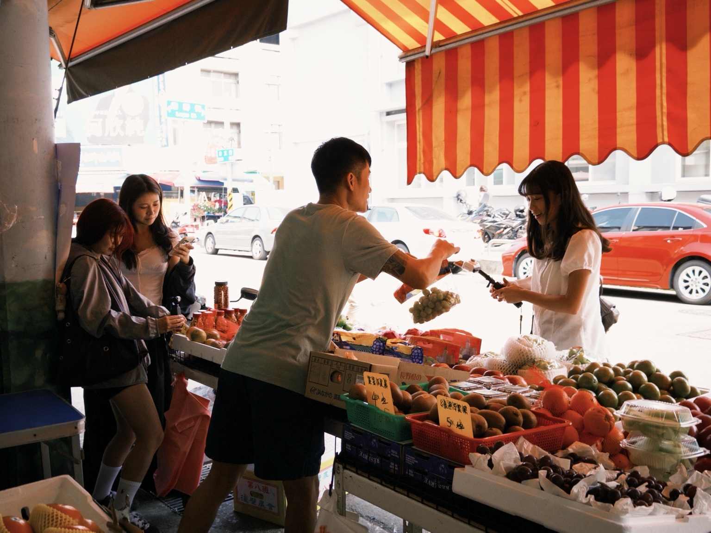
WHY THIS WALK?
臺中文學館與第五市場，擁有截然不同的場域氣氛。前者保存歷史建築與文學記憶，後者延續在地飲食與日常採買。
我們以兩個地點為雙核心，透過步行把文化空間與常民生活串在一起。讓旅人不只是抵達景點，也能在沿途的街道、建築與人情互動裡，發現臺中舊城的不同面貌。
「歷史在此延續，生活也在此發生。」
HISTORY & LITERATURE
在老屋與樹影之間，
聽見城市留下的文字。
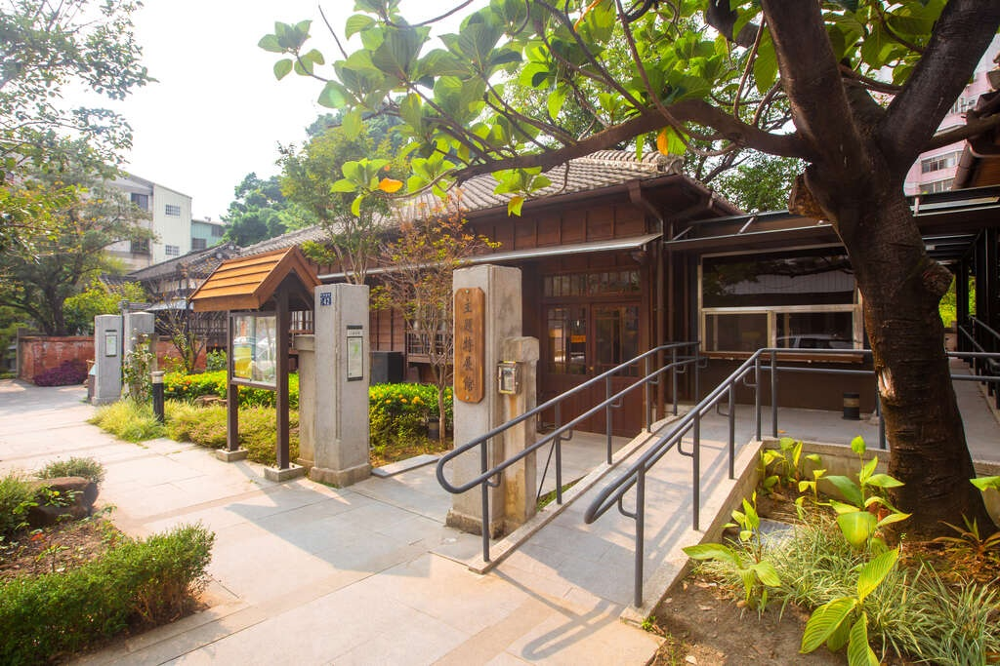
老建築保留著時間的痕跡，
也讓文學走進日常風景。
臺中文學館前身為日治時期的警察宿舍，1932 年落成。臺中市政府於 2009 年將其登錄為歷史建築，經修復與活化後，於 2016 年 8 月 26 日全館開放。園區以臺中文學為主題，透過展覽、研習與互動展示，記錄地方文學發展。
木造建築、展覽空間與綠意庭園交織，讓參觀者能在城市裡放慢腳步，從建築細節一路讀到臺中的文學記憶。
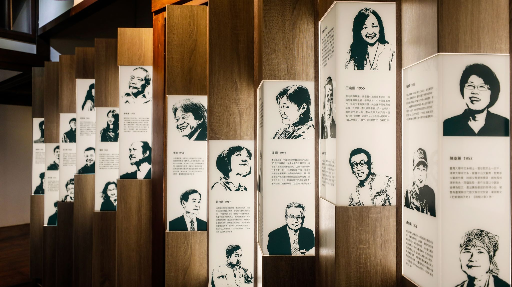
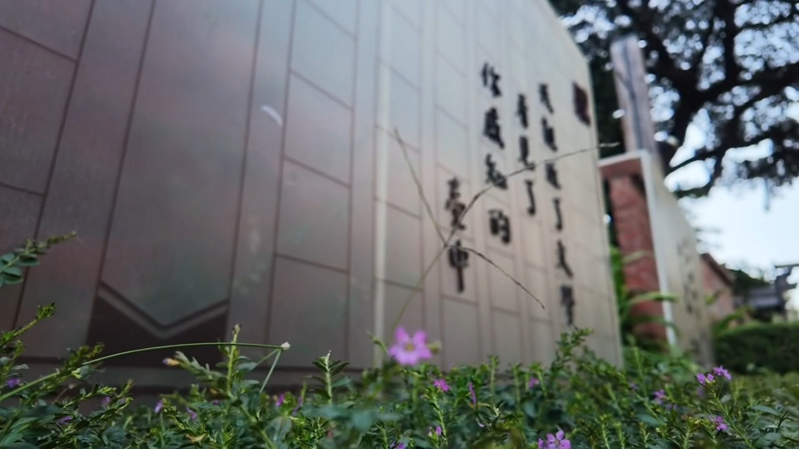
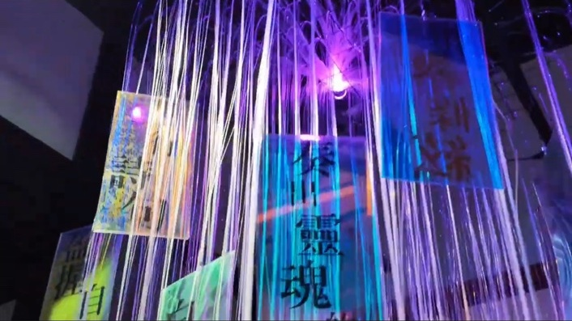
MARKET & DAILY LIFE
從攤販招呼到食物香氣，
日常就是最真實的地方風景。
第五市場的發展可追溯至民國 27 年。早期從醃菜交易與周邊攤販逐漸形成市集，後來增設鋼棚、店鋪與固定攤位，成為居民日常採買的重要場所。
市場裡有蔬果、生鮮、熟食與各式生活用品。走進市場，不只是尋找美食，也能觀察攤商與顧客之間熟悉的互動，感受傳統市場延續至今的生活節奏。
市場官方介紹 ↗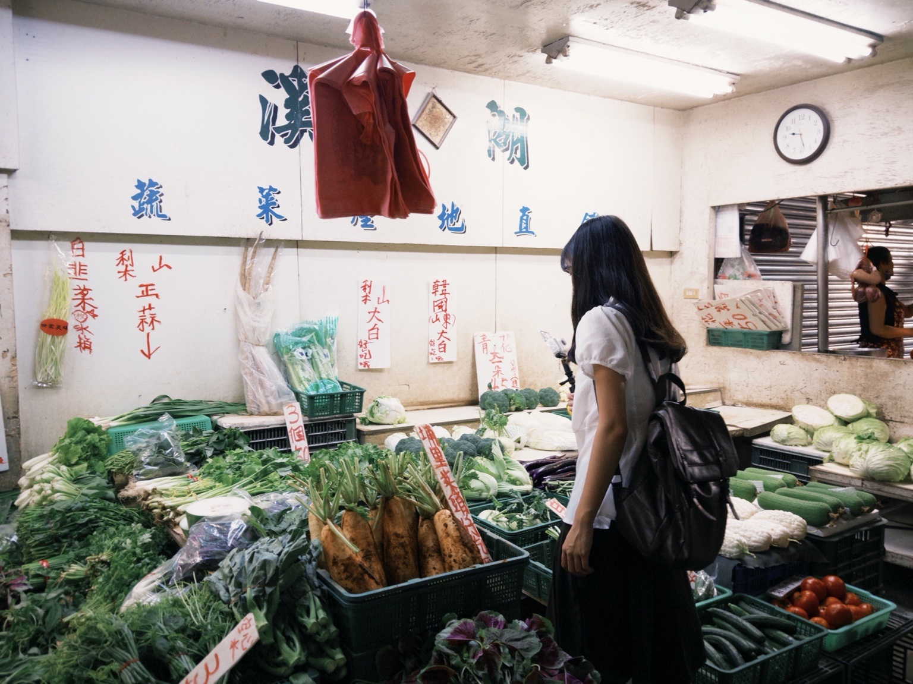
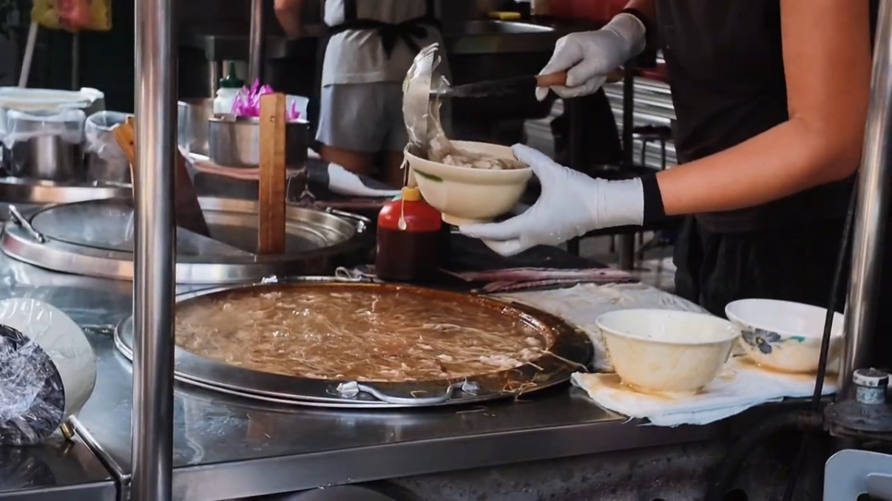
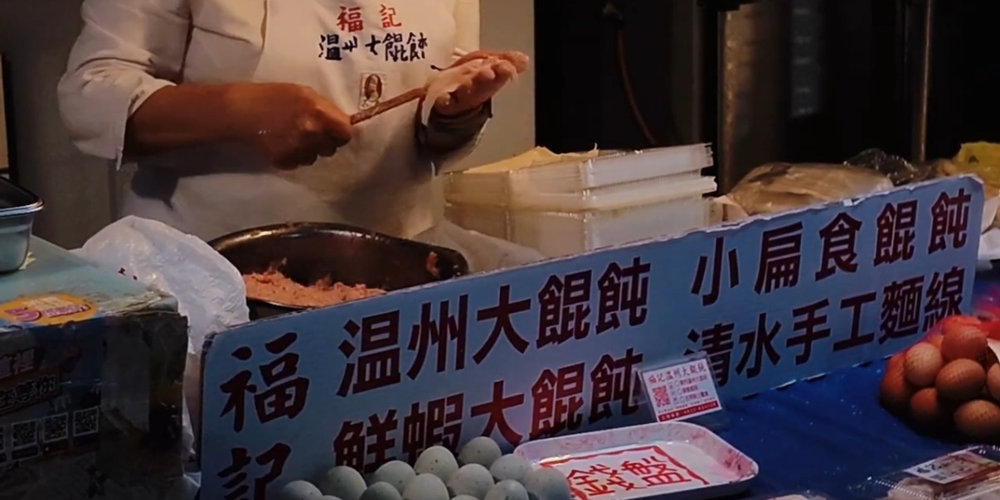
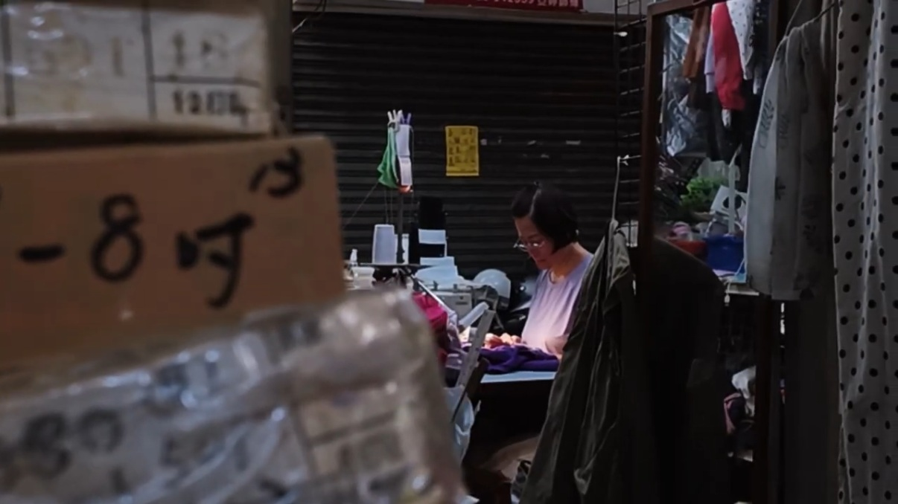
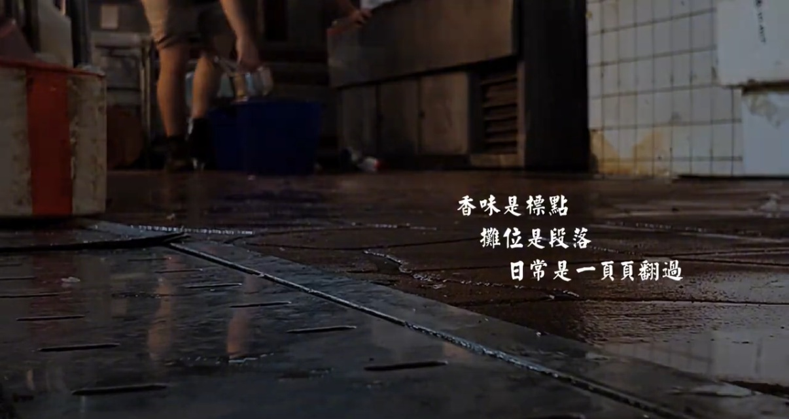
市場營業狀況可能因攤商而異，以上資訊以臺中市政府市場介紹為參考。
CITYWALK ROUTE
從文學館出發，走進第五市場。
讓城市的靜與動，在腳步之間相遇。
以下使用 Google Maps 路線查詢，步行路線與時間請以地圖即時結果為準。
留意木造建築、展覽與庭園細節，從空間認識地方的歷史記憶。
把步伐放慢，觀察街道、店面與生活環境，讓路程本身成為旅程的一部分。
看看當季食材與攤商工作，依自己的喜好選擇小吃，體驗在地生活。
IMAGE & STORY
從歷史建築到日常街景，透過影像呈現臺中舊城一靜一動的魅力。
以臺中文學館與第五市場為拍攝主軸，記錄日式歷史建築的文化底蘊，以及傳統市場充滿人情味的日常生活。
透過鏡頭捕捉兩處場域不同的氛圍，帶領觀眾跟隨步行的視角，探索臺中舊城的街道、文化與生活樣貌。
以腳步為序，讀一座城。
臺中文學館介紹影片（延續原 HW07 使用的影片連結）。